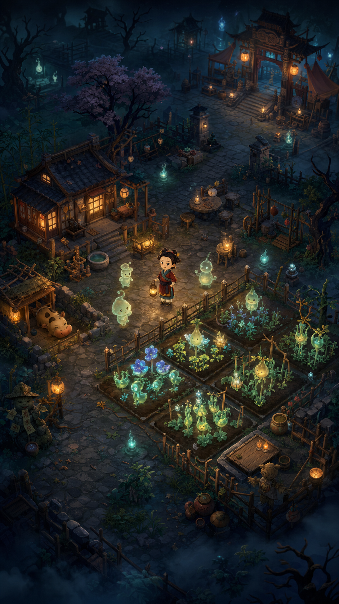
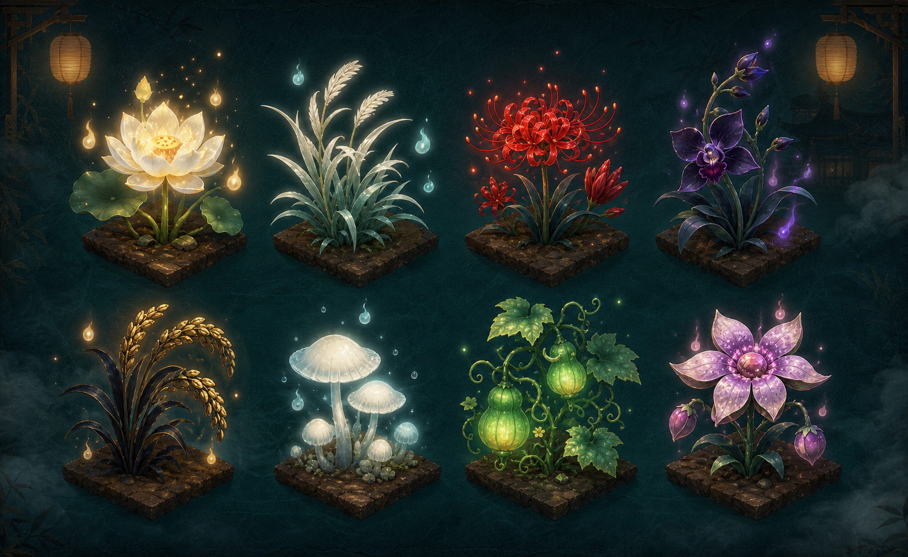
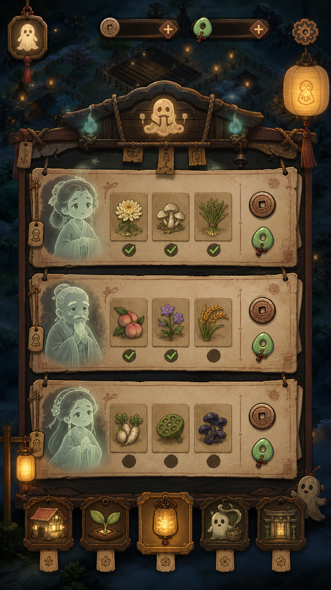
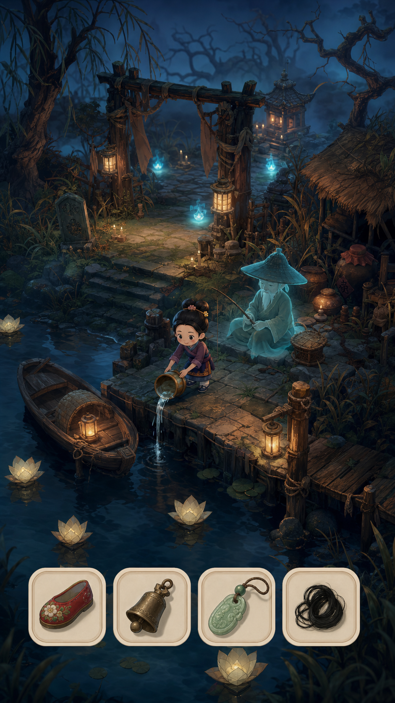

渡愿灵田
在鬼怪横行的常夜里，为先人种下未了愿望，把破败小院养成温暖归处。
24 小时常夜
温柔微恐
中式灵田
鬼市愿单
祈福渡魂
概念定位
这不是普通农场的夜间滤镜，而是一套从场景、作物、建筑、NPC 到 UI 都统一的“常夜种田”包装。画面神秘、阴雾、鬼火常驻，但角色和作物保持可爱、可收集、可长期经营。
安全线
- 不出现血腥、残肢、直观刑罚或强惊吓脸。
- 鬼怪表现为温和半透明亡魂，服务羁绊和订单。
- 作物是“好看但阴间”，避免重口恐怖。
首批概念图




玩法包装映射
| 当前经营元素 | 新包装名称 | 视觉关键词 |
|---|---|---|
| 面包店 | 忘忧汤屋 | 木构小铺、药炉、暖黄灯、青烟 |
| 原料店 | 灵材铺 | 抽屉柜、符纸、药草束、青铜秤 |
| 仓库 | 功德仓 | 木牌、莲纹、封印锁、微光 |
| 商店 | 鬼市小铺 | 夜市招幡、纸灯、铜钱、温和鬼客 |
| 探险入口 | 阴雾秘境 / 忘川旧渡 | 石阶、雾门、河灯、旧渡船 |
| 订单 | 愿单 / 渡魂委托 | 符纸委托、亡魂头像、作物需求 |
建议对外主标题：24 小时常夜微恐种田。副标题：种下先人的愿望，点亮阴雾中的归途。